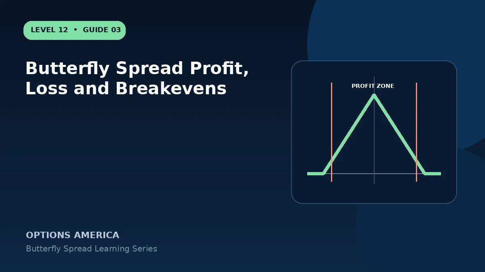

Calculate maximum profit, maximum loss and the two expiration breakevens for a standard equal-wing long butterfly.
Maximum loss
The opening net debit is generally the maximum expiration loss. It occurs below the lower strike or above the upper strike when the options offset or expire worthless, before transaction costs.
Maximum profit
Subtract the debit from one wing's width. At the body strike at expiration, the lower long option has full wing-width intrinsic value while the other legs expire worthless or offset.
The two breakevens
Add the debit to the lower strike and subtract it from the upper strike. These formulas assume equal widths and a debit entry; broken-wing and credit structures require side-specific analysis.
Probability and payoff
A large theoretical return comes from a narrow peak, not free leverage. Compare the width of the profitable zone, time, forecast accuracy, liquidity and realistic exit price.
A practical example
A 50/55/60 call butterfly costs $1.40. Maximum loss is $140, maximum profit is $360, and expiration breakevens are $51.40 and $58.60.
This simplified example focuses on one structure and selected expiration outcomes. Live option prices also reflect the underlying price, time decay, rates, dividends, liquidity and transaction costs. Greeks are theoretical estimates, not guarantees.
Frequently asked questions
Can both sides lose?
One final price can finish outside either side of the profit zone.
Does maximum profit occur before expiration?
Usually not exactly; remaining time value affects the legs.
Do fees matter more here?
They can, because four contracts are opened and closed.
Continue the Butterfly Spreads cluster
Explore related guides: Butterfly Spread Example With Full Payoff Scenarios · Long Butterfly vs Short Iron Butterfly · Theta and Time Decay in a Butterfly Spread. For a structured sequence, use the free Level 12 – Butterfly Spread course.
Options involve risk and are not suitable for every investor. This material is educational and is not investment, tax or legal advice. Greeks are theoretical estimates, and contract terms and broker requirements can vary.